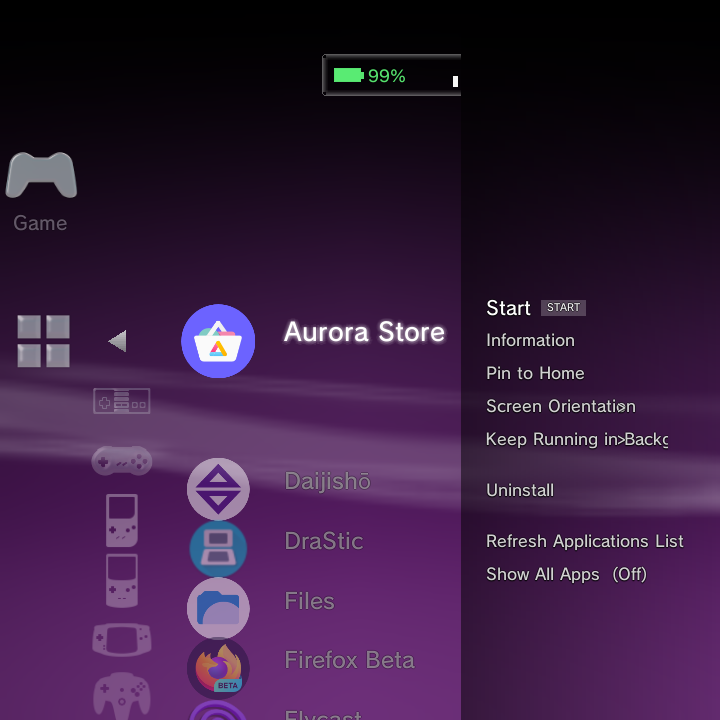
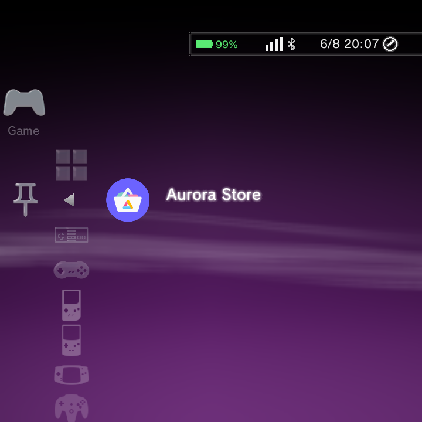

Your installed apps live right alongside your games. GammaOS Nano gathers them into an Applications entry inside the Game category, so a standalone emulator, a store app, or any other program is only a couple of button presses away.
Several app features are new since 1.4 (pinning apps to the home, Keep Running in Background, the bundled browser and more). See What's New for the full list.
Where to find your apps
Open the Game category and look for the Applications entry. Select it to see the apps installed on your handheld. System apps are hidden by an exclusion list so the view stays clean and useful, but you can reveal everything if you need to (see Show All Apps below).
The Applications row uses a grid icon so it is easy to tell apart from the Pinned Apps row, which uses a push-pin (see Pin apps to the home below).

Apps installed from Google Play, F-Droid or Aurora now appear in the default Applications list, and RetroArch is listed here too so you can open its own UI directly.
Launching an app
Selecting an app launches it, and the handoff works exactly like starting a game: the home menu steps aside, the app takes over the screen, and when you exit the app you return to the home menu right where you left off.
Per-app Options
Highlight an app and open its Options menu for the actions below.

| Option | What it does |
|---|---|
| Start | Launch the app |
| Information | View app details |
| Screen Orientation | Set how the app is displayed |
| Keep Running in Background | Stop Nano force-stopping the app when you exit it |
| Uninstall | Remove the app from your handheld |
| Refresh Applications List | Re-scan for newly installed apps |
| Show All Apps | Reveal system apps that are hidden by default |
If you just installed something and it is not in the list yet, run Refresh Applications List to pick it up. Newly installed or uninstalled apps also update the list immediately.
Show All Apps adds the system utilities that are normally hidden, so you can reach things like the standard Files app when you need them. Turn it off again to go back to the clean list.

For a full tour of the Options menus across every part of Nano, see Context menus.
Keep Running in Background
By default Nano force-stops an app when you leave it, which keeps memory free for games. For tools that are meant to stay alive, such as a music player or a file manager, turn on Keep Running in Background in the app's Options menu. The app then keeps running after you return to the home menu instead of being closed.

Pin apps to the home
Press Y on any app to pin it. A new Pinned Apps row appears in the Game column showing your pinned apps with their real icons, so your favourite tools are one hop from the home menu. Press Y again on a pinned app to unpin it. Your pins are kept across restarts.

The Files app
The standard Files app (DocumentsUI) is listed under Applications and is fully controller-navigable. It focuses the first item when a folder loads and keeps the focused item on-screen as you move the d-pad, so you can browse and manage storage without a touch screen.
GammaBrowser
A web browser, GammaBrowser, ships in every Nano build (not just TV builds), so you can reach the web straight from Applications.
Google apps and the Play Store
Whether Google apps are already on your device depends on your GammaOS edition (see the editions rundown):
- GammaOS Full includes Google apps and the Play Store out of the box, so there is nothing to set up.
- GammaOS Lite and Core ship without Google services to stay light. You can still add apps, and you can add full Google services if you need them.
The simple path: Aurora Store. Aurora Store is an alternative client for the Google Play catalogue that works without Google services. Install it (it is on F-Droid) and you can browse and download most free apps, often including apps you already own, without signing in to Google. Apps you install this way show up in the Applications list like any other.
microG is not officially endorsed or supported by GammaOS. The steps below are a guide put together by the community, provided as-is. Do not install any form of Google apps or microG on low-memory devices, such as the TrimUI Brick (1GB RAM): there is not enough memory for them, and it will hurt performance and stability.
Full Google services: microG. If you need Google sign-in, push notifications, or paid-app licensing, install microG, an open reimplementation of Google Play services. Do this in full Android (desktop) mode, not in Nano, and install three APKs from the microG project in this order:
- GmsCore (
com.google.android.gms), the core services, from the microG GmsCore releases. - microG Companion (
com.android.vending) from the same releases page. It acts as a lightweight Play Store; advanced users can later swap it for a patched full Play Store. - GsfProxy, from the GsfProxy releases.
Sign in to your Google account while in Android mode. If sign-in fails with "there was a problem connecting to Google services", open microG Settings and check its Self-Check screen; the microG documentation explains what each check needs. Once it is set up, your apps work whether you are in Android or back in Nano. To learn how to boot into full Android and back, see Desktop Mode Features.
Run on Primary Screen (dual-screen devices)
On dual-screen (DS-style) handhelds, an app's Options menu adds Run on Primary Screen. Turn it on to make a dual-screen app run on the main panel. Nano can also prompt you automatically when it detects an app that suits this, and the Control Center yields the bottom panel to an app that owns it.
Standalone emulator apps
Many emulators are regular Android apps rather than RetroArch cores. Once one is installed, it shows up here in Applications and you can launch it directly. To wire a standalone emulator into the Game systems so ROMs launch straight into it (for example, AetherSX2 for PlayStation 2), set it up as a custom system. See Add a custom system for the step-by-step.